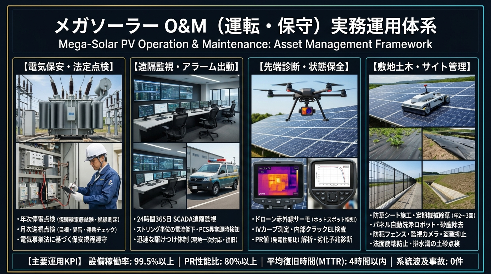

メガソーラー O&M（運転保守）マネジメント体系スライド
電気保安（高圧変電）・24時間スマート遠隔監視・先端予防診断（ドローン赤外線/IV）・敷地環境管理の4大柱と主要KPI

O&Mの全体像
O&M（Operation & Maintenance）は、発電所の運転監視と保守点検の総称です。業務は大きく次のように分けられます。
電気保安
電気事業法に基づく保安規程に沿った点検。電気主任技術者（選任または外部委託）が担う。
監視・駆けつけ
遠隔監視システムでの異常検知、現地出動、一次復旧。
修繕・部品交換
故障機器の修理・交換、予備品管理、メーカー保証対応。
サイト管理
除草、パネル洗浄、フェンス・排水路・法面の維持、防犯。
保全の3つの考え方
| 方式 | 内容 | 例 |
|---|---|---|
| 事後保全（CM） | 故障してから修理する | PCS停止後の部品交換 |
| 予防保全（PM / TBM） | 時間・周期を決めて点検・交換する | 年次点検、PCSファン・フィルタの定期交換 |
| 状態基準保全（CBM） | データで劣化兆候を捉えて手当てする | ストリング電流の低下傾向から不良モジュールを特定 |
電気保安と定期点検
出力50kW以上の太陽電池発電設備は自家用電気工作物に該当し、設置者は保安規程の届出と電気主任技術者の選任（または外部委託承認）が必要です。点検内容・頻度は保安規程で定めます。
| 点検種別 | 頻度の例 | 主な内容 |
|---|---|---|
| 月次点検（巡視） | 保安規程に定める頻度（毎月〜数か月ごと） | 目視による外観点検、異音・異臭・発熱、計器指示値、PCS表示の確認 |
| 年次点検 | 年1回程度 | 停電を伴う精密点検。絶縁抵抗測定、保護継電器試験、接地抵抗測定、受変電設備の清掃・増し締め |
| 臨時点検 | 事故・異常・災害時 | 台風・落雷・地震後の被害確認、事故原因調査 |
⚠️
電気事故の報告義務
感電死傷・電気火災・波及事故（構内事故が系統に影響）などは、電気関係報告規則に基づく所轄産業保安監督部への報告対象になります。O&M事業者と報告フローを事前に確認しておきましょう。
遠隔監視とアラーム対応
監視システムは、PCS・ストリング・受電点メーター・気象計などのデータを収集し、異常時にアラームを発報します。
検知アラーム発報
→
一次判断遠隔で原因推定
→
出動駆けつけ
→
復旧リセット・交換
→
報告原因・逸失量・再発防止
よくあるアラームと原因
| アラーム | 考えられる原因 |
|---|---|
| PCS停止・故障 | 内部部品の故障、過熱、冷却ファン不良、制御基板異常 |
| 系統異常による停止 | 系統側の電圧・周波数変動、停電で保護継電器が動作（多くは自動復帰） |
| 地絡・絶縁低下 | ケーブル損傷（小動物・草刈り機）、浸水、コネクタ劣化 |
| ストリング電流低下 | 断線、ヒューズ切れ、モジュール破損、影・汚れ |
| 通信断 | 通信機器・回線の不具合、停電。発電は継続している場合もある |
💡
AMの着眼点
同じアラームの繰り返しは根本原因が未解決のサイン。「件数」「逸失発電量」「復旧までの時間」を月次で集計し、O&M事業者に再発防止策を求めます。
診断技術
| 手法 | わかること | ポイント |
|---|---|---|
| IVカーブ測定 | ストリングの電流−電圧特性。開放電圧（Voc）、短絡電流（Isc）、曲線因子（FF）の異常 | 断線・バイパスダイオード故障・劣化の特定に有効 |
| 赤外線サーモグラフィ | ホットスポット（局所発熱）、クラスタ故障、接続部の発熱 | ドローン搭載で大規模サイトを短時間で点検可能。日射が十分な時間帯に実施 |
| 絶縁抵抗測定 | 直流回路・交流回路の絶縁状態 | 年次点検の基本項目。雨天後は値が下がりやすい |
| EL検査 | セル内部のマイクロクラック（目に見えない割れ） | 暗所・夜間で実施。輸送・施工時の損傷確認にも |
| ストリング監視データ分析 | ストリング間の電流ばらつき | 常時データで異常を早期発見（CBMの基本） |
植生管理・パネル洗浄
除草
- 雑草はパネルへの影、ケーブル損傷、火災、害虫・小動物の住処の原因になる。
- 生育期を中心に年2〜3回程度の除草が一般的だが、地域・植生により大きく異なる。
- 対策：機械除草、防草シート、砂利敷き、除草剤（周辺環境・近隣への配慮が必要）、羊の放牧など。
- 草刈り機によるケーブル・モジュール損傷、飛び石によるガラス割れに注意。
パネル洗浄
- 汚れによる損失と洗浄コストを比較して実施判断（費用対効果）。
- 鳥の糞の局所的な汚れはホットスポットの原因にもなる。
- 洗浄方法（水質・圧力・洗剤）はメーカー保証の条件を確認する。
主要機器の寿命と更新
| 機器 | 更新・交換の目安 | 備考 |
|---|---|---|
| PCS（パワコン） | 10〜15年程度で主要部品交換または本体更新を検討 | 冷却ファン・電解コンデンサ・フィルタなど消耗部品は定期交換。メーカーの保守部品供給期限に注意 |
| 太陽電池モジュール | 25〜30年以上 | 出力保証期間内の不具合はメーカー保証請求を検討 |
| 変圧器・受変電設備 | 20〜30年程度 | 油入変圧器は絶縁油の劣化診断 |
| 監視・通信機器 | 5〜10年程度 | 通信規格の終了（停波）による更新が発生することがある |
| 架台・基礎 | 事業期間全体 | 腐食・ボルト緩み・基礎の沈下を定期確認 |
✅
長期修繕計画
PCS更新のような大型支出は、事業計画上の修繕積立（リザーブ）で手当てします。更新時期・費用を長期修繕計画に落とし込み、キャッシュフローとの整合を確認します。
盗難・災害対策
- ケーブル盗難：近年、銅線ケーブルの盗難被害が各地で多発。長期停止と高額な復旧費用につながる。防犯カメラ、センサー、フェンス強化、警備会社との連携を検討。
- 台風・強風：モジュール飛散、架台倒壊。設計風速と施工品質の確認。
- 豪雨・土砂：法面崩壊、排水路の詰まり、浸水。斜面立地は特に重点管理。
- 落雷：PCS・監視装置の故障。避雷器（SPD）の点検・交換。
- 積雪：架台の変形・倒壊、パネル破損。
- 再エネ特措法の事業計画策定ガイドラインでは、柵塀の設置や標識の掲示などが求められている。
KPIと報告
時間ベース稼働率
稼働率 = 対象時間 − 停止時間対象時間
対象時間は「日射のある時間帯」に限定することが多い。PCS台数・容量で加重して算出する。
エネルギーベース稼働率
稼働率 = 実発電量実発電量 + 停止による逸失発電量
日射の多い時間の停止ほど重く評価される。売電収入への影響を直接反映できる。
| KPI | 見る目的 |
|---|---|
| 稼働率（時間・エネルギー） | 停止の少なさ。O&M契約で保証値を設定することもある |
| PR（補正後） | 設備性能の健全性 |
| 一次対応時間／復旧時間 | 駆けつけ・修理のスピード |
| 点検計画の実施率 | 予防保全が計画通り行われているか |
| O&Mコスト（円/kW） | コスト水準の他サイト比較 |
AM視点のチェックリスト
- O&M契約の業務範囲（含まれる作業・別途費用の作業）を把握しているか
- 保安規程・点検計画と、実際の点検報告書が一致しているか
- アラームの件数・原因・逸失量・復旧時間を月次で確認しているか
- 予備品（PCS部品・ヒューズ・モジュール等）の在庫と保管場所を把握しているか
- メーカー保証の期間・条件と、保証請求の手順を整理しているか
- 長期修繕計画と修繕積立の残高が整合しているか
- 防犯・災害対策（カメラ・フェンス・排水）と保険の補償範囲を確認しているか